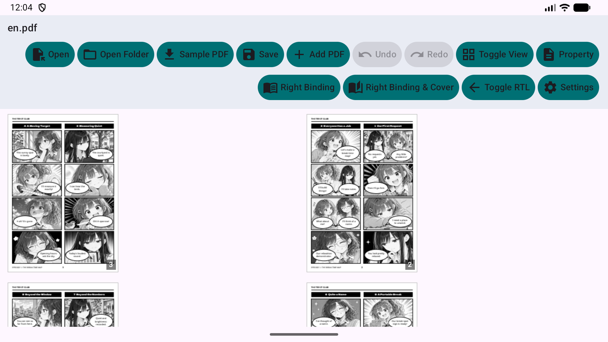
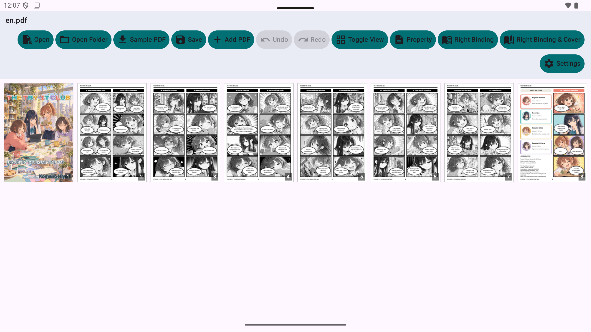

Mihiraki PDF Utility
Tampilan halaman ganda (spread), pemisahan, dan penggabungan PDF yang intuitif untuk Android.
Tampilan halaman ganda (spread), pemisahan, dan penggabungan PDF yang intuitif untuk Android.
Mihiraki PDF Utility adalah alat kaya fitur yang dirancang untuk pembaca dan kreator. Atur buku Pindai, gabungkan dokumen, dan susun ulang halaman dengan mudah.

Menampilkan dua halaman berdampingan. Mendukung mode baca kanan-ke-kiri (RTL) untuk manga dan buku.

Memisahkan halaman ganda menjadi halaman individual (vertikal dan horizontal).

Atur urutan halaman cukup dengan menyeret thumbnail.

Gabungkan beberapa file PDF menjadi satu dokumen.

Berfungsi lancar di ponsel, tablet, dan Chromebook.


Download sample PDF manga to test the app:
51 PDF dalam 14 bahasa dan 17 varian bahasa/wilayah, masing-masing tiga episode. Spanyol/Amerika Latin, Brasil/Portugal, dan Taiwan/Hong Kong memiliki filter terpisah. Edisi Hong Kong memakai bahasa Tionghoa tulis standar, bukan bahasa Kanton percakapan. Ukuran dan SHA-256 diperiksa; PDF lama tetap disimpan.
"The Try-It Club" Episodes 1 & 2
© 2026 Komairo Hiyori
Parts of this work for which the publisher holds copyright and other licensing rights are provided under the Creative Commons Attribution 4.0 International License (CC BY 4.0).
When reusing this work, please display the work title, author name "Komairo Hiyori", the source of the original work, and a link to the license, and clearly indicate if any changes were made.
Generative AI was used in the production of text and images, as well as the translation of this work. Materials with rights held by third parties, such as fonts, are subject to their respective licenses. Nothing in this license constitutes a restriction on the use of material that is not protected by copyright or similar laws.
Video berbahasa Inggris dan dibuka di YouTube.